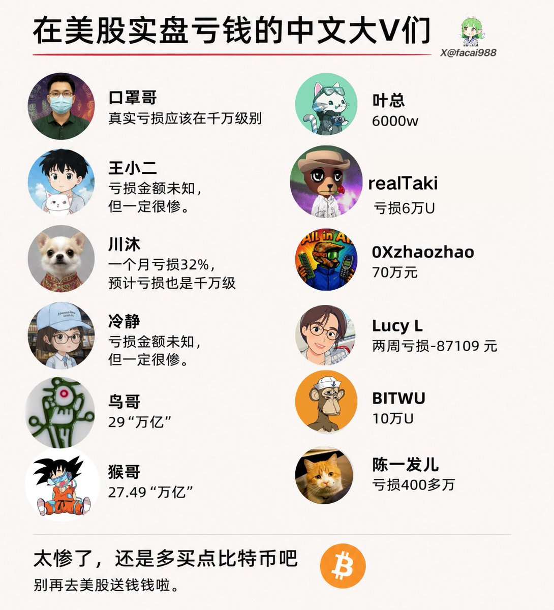

molly
@loveoverder
萬，？億？

钱宝 🐰
@facai988
在美股实盘亏钱的中文大V们！
川沐@xiaomustock，一个月亏损32%，预计亏损也是千万级
王小二@brc20niubi，亏损金额未知，但一定很惨。
冷静@hexiecs，亏损金额未知，但一定很惨。
口罩哥 @KZG6886，真实亏损应该在千万级别
realTaki @realTaki42，亏损6万U
鸟哥@Wangduanniao，29“万亿” https://t.co/dbrs4dVWBr